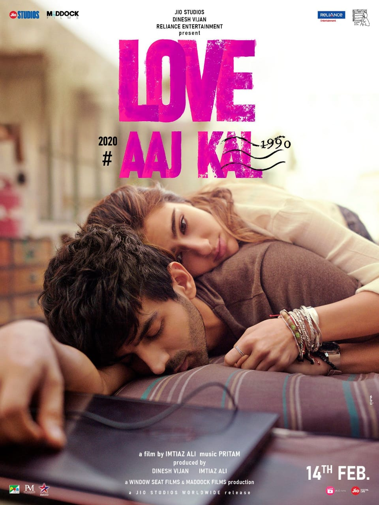

Love Aaj Kal(transl.'Love these days') is a 2020 Indian Hindi-Language romantic drama film directed by Imtiaz Ali and starring Kartik Aaryan and Sara Ali Khan. Principal photography began in the first half of March 2019 and ended in July 2019.It was released in India on Valentine's Day 2020.
| LOVE AAJ KAL | |
|---|---|
|  Theatrical release poster | |
| Directed by: | Imtiaz Ali |
| Produced by: | Dinesh Vijan Imtiaz Ali |
| Written by: | Imtiaz Ali Irshad Kamil(lyrics) |
| Starring: | Kartic Aaryan Sara Ali Khan Randeep Hooda Arushi Sharma |
| Music by: | Score:Ishaan Chhabra Songs: Pritam |
| Cinematography: | Amit Roy |
| Edited by: | Aarti Bajaj |
| Production Company: | Maddock Films Window Seat Films Reliance Entertainment |
| Distributed by: | Pen Marudhar Entertainment Jio Studios |
| Release Date: | 14 February 2020 |
| Running time: | 141 minutes |
| Country: | India |
| Language: | Hindi |
PLOT
Zoe and Veer meet at a bar. The two leave and decided to spend the night together at Veer's home but Veer stops Zoe from continuing their act. He tells her that the time is not right. Zoe leaves, infuriated. Veer keeps followin Zoe, who finally confronts him and asks him not to follow her.
There is a flashback scene where Leena and Raghuvendra "Raghu" Singh have the same conversation back in 1990s in Udaipur.
Back to present day, Veer drops her for an interview at the office of the Mheta Group and they slowly begin their relationship. Raghu is an ex- medical student who ran away from Udaipur and now owns several restaurants in Delhi, including the cafe at which Zoe hangs out very often. Raj, who is good friends with Zoe, tells her the story of his childhood sweetheart, Leena, thus implying that he is grown up Raghu. He tells her that he used to behave with Leena just as Veer behaves with Zoe, and recites his own childhood memories with Leena to Zoe and tells her how he asked Leena for a dance together.
In the flashback, it is seen that Raghu and Leena used to meet each other secretly and how Raghu left everything for Leena and moved for her to Delhi, discontinuing his studies to be with Leena. Later one day Zoe walks in on Raghu and a woman, assuming she is Leena, but realizes its not the case. Raghu now Raj reveals that he left Leena, for his own big town fantasies. Zoe is convinced by her mother that she can't possibly have both her love and career together. She goes to meet Veer's parents, but leaves crying. Veer relay to Raj what Zoe did, and Raj, convinced that he influenced Zoe towards behaving this way, responds by getting her the job.
Some day later, Zoe sees the Veer with another girl. Heartbroken, she hangs out with the multiple people but doesn't happen to like any of them. She goes to a bar with a guy and gets drunk but he refuses to drop her at her house.He tells that he can't enter a relationship of compromises with Zoe and breaks up with her. The next day he informs her about a new job in the Himalayas and is leaving for 2 years, explaining that he has as much right to be focused on his career as does she, and bids her goodbye.Zoe gets proposal from the Mehta family to marry Rishabh, but she refuses. When Zoe goes to meet Raj, he tells her that he met Leena one last time, when he realized he lost the person who hw was before with Leena and finds that she is pregnant. He leaves from there, gets into a cab and goes to airport. He adds he still misses Leena, but is helpless now.He starts crying and Zoe comforts him. Raj tells her that she shouldn't make the same mistake he made. Zoe leaves for the Himalyas to reunite with Veer. She sees Veer sleeping outside. She goes tand rests atop him. She says that she won't be able to balance between love and work ever, but still she wanted to be with him. Veer asks whether she will take a leap with him, to which she agrees, and they reunites and kiss each other.
CAST
- Kartik Aaryan as Veer Taneja / Raghuvendra "Raghu" Singh
- Sara Ali Khan as Zoe Chauhan
- Randeep Hooda as Raj Verma, in reality an adult Raghuvendra "Raghu" Singh
- Simone Singh as Zoe's Mother
- Arushi Sharma as Leena Gupta
- Siddharth Kak as Mr. Harshwardhan Mehta
- Pranati Rai Prakash as Office Girl
- Kavita Ghai as Veer's Mother
- Shataf Figar as Veer's Father
- Vedika Haralalka as Zoe's Friend
- Monika Panwar as Sweetu
- Siddharth Shaw as Rathore
PRODUCTION
On 17 January 2019, it was reported that Ali was considering his next venture with Khan and Aaryan, a romantic film. On 1 March 2019, it was confirmed that the pair has been teamed up in directorial venture of Ali and the filming is starting in Delhi.
The principal photography of the film began in the second week of March 2019, with Aaryan shared a picture of Khan and him from sets. Khan also shared the picture on her social media account. The first schedule of the film was wrapped on 25 March 2019. To inform about the conclusion of the schedule, Khan posted a video on her Instagram account to celebrate. The twenty-day second schedule of the film began on 10 April in Udaipur. Filming was completed on 1 July 2019, after the final sixty-six days of shooting in Himachal Pradesh.
MARKETING AND MEDIA
The first look of the film was revealed on 20 March 2019, and the release date was announced as 14 February 2020, coinciding with Valentine's Day. On 16 January 2020, the movie poster was released.
The trailer of the film was released on 17 January 2020 by Maddock Films. The film was released in India on 14 February 2020.
HOME MEDIA
The film was made available for streaming on Netflix and Jio Cinema on 28 April 2020.